Backend Developer · IoT & AI System Builder
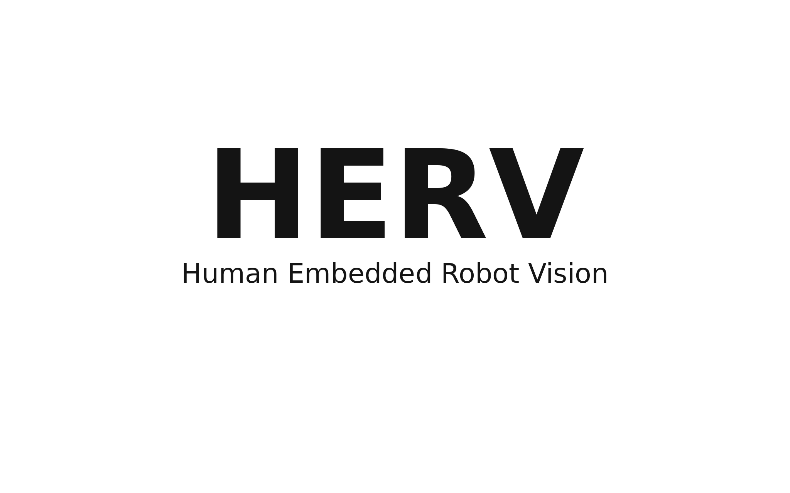
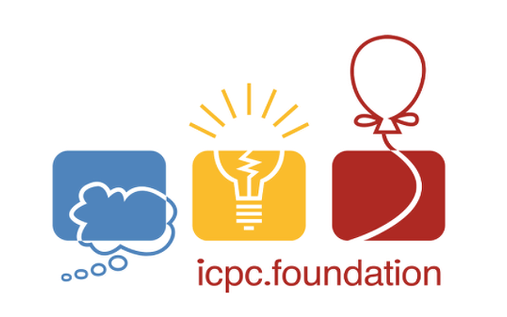
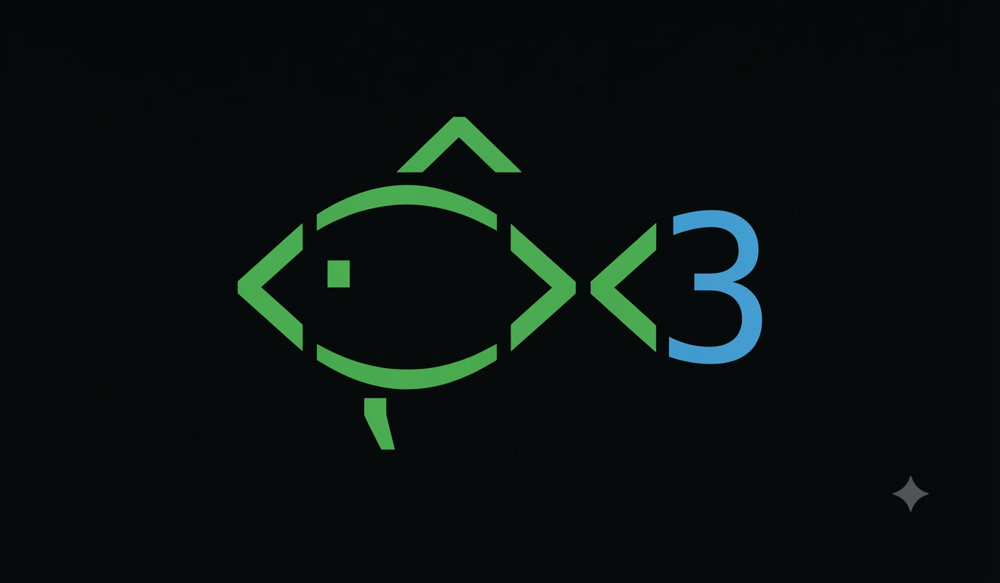
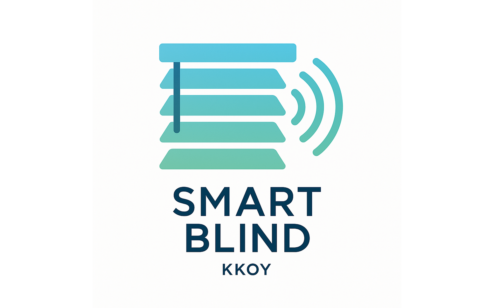
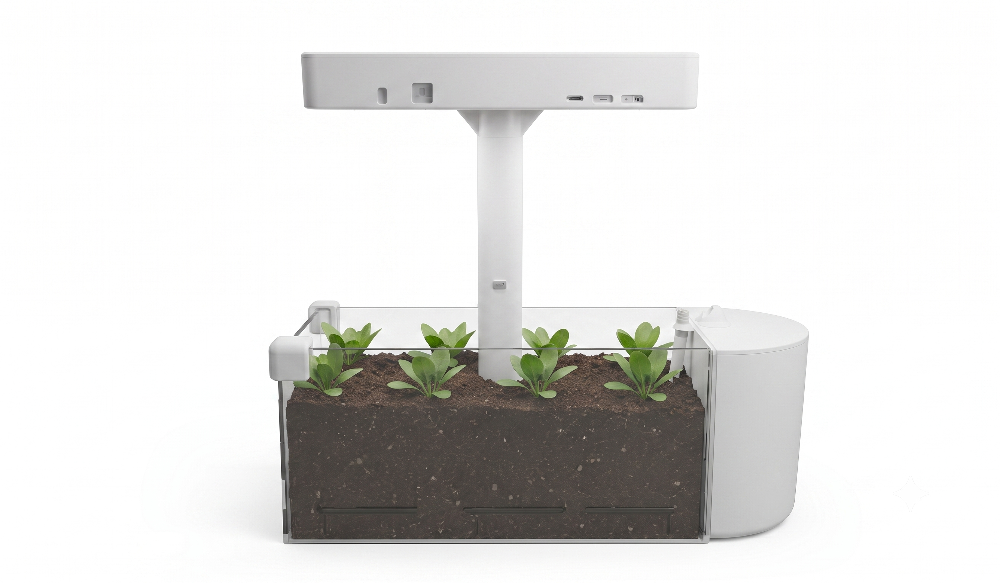
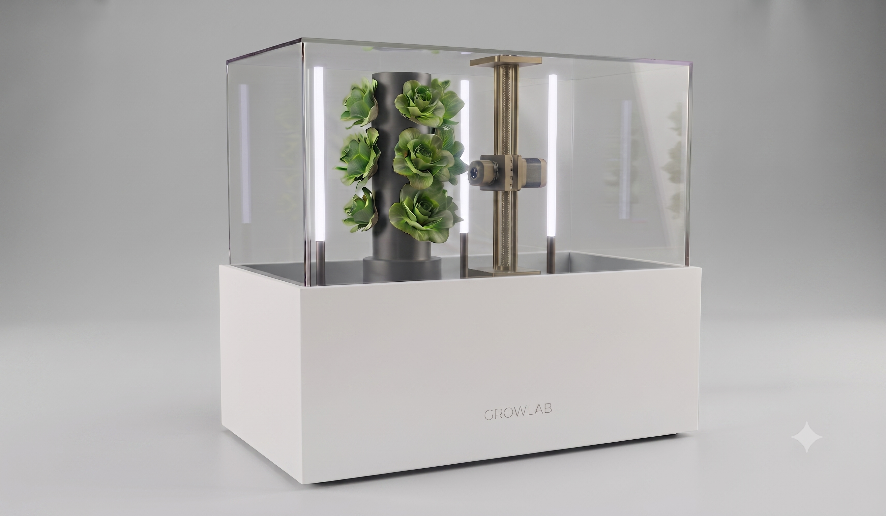
Arduino · Sensor · Hardware
2025년 1학기 · 동아리 팀 프로젝트 · 미세먼지 센서 회로·코딩, 전체 코드 디버깅 담당
HERV 동아리에서 미세먼지, 빗물, 조도 센서로 주변 환경을 감지해 창문을 자동 제어하는 스마트 시스템을 제작했습니다. 외부 유해물질 유입을 막거나 날씨 변화, 실내 밝기에 대응하여 쾌적하고 안전한 실내 환경을 자동으로 조성하는 것을 목표로 했습니다.
아두이노를 기반으로 모터와 톱니바퀴를 이용한 개폐 장치를 구현했으며, 저는 미세먼지 센서의 회로 구성과 코딩을 주로 담당했습니다. 또한 전체 시스템의 최종 코드를 디버깅하며 안정성을 높이는 역할을 맡았습니다.
이 경험을 통해 코딩과 회로 설계를 아우르는 통합적인 문제 해결 능력을 기를 수 있었고, 아이디어를 하드웨어 프로토타입으로 완성하는 전체 사이클을 이해하게 되었습니다.
AI · Time Series · GRU/LSTM
날씨 빅데이터 콘테스트의 과제인 '기상과 지하철 혼잡도 상관분석·예측'을 주제로 기획한 딥러닝 프로젝트입니다.
기상 변화가 대중교통 수요에 미치는 영향을 분석하여 1시간 뒤의 지하철 혼잡도를 예측하는 시계열 모델을 개발했습니다. 날씨마루 데이터를 정제하고 체감온도 등 파생 변수를 구축했으며, LSTM과 GRU 모델을 설계 및 비교했습니다.
최종적으로 튜닝을 거친 GRU 모델을 통해 Test RMSE 10.87의 예측 성능을 달성했습니다.
Algorithm · C++ · Parametric Search
2025.05 · 팀 프로젝트 · 알고리즘 설계·구현 담당
2024 ICPC 아시아-서울 지역 대회의 기출문제인 Problem J (Street Development)를 효율적인 알고리즘으로 해결한 팀 프로젝트입니다.
일직선상에 정렬된 로봇들이 정보를 하나로 모으기 위해 필요한 최소 배터리 용량을 구하는 문제로, 매개변수 탐색(Parametric Search) 알고리즘을 도입했습니다.
특정 배터리 용량으로 모든 정보 수합이 가능한지 판별하기 위해 Prefix 및 Suffix 배열 기반의 O(N) 검증 로직을 고안했고, 전체 알고리즘을 O(N log L)의 시간 복잡도로 구현했습니다.
Rust · C++ · Open Source
2025.10~12 · 개인 오픈소스 기여 · Rust UI·이벤트 루프, C++ FFI 브릿지, AI 로직·네트워킹 담당
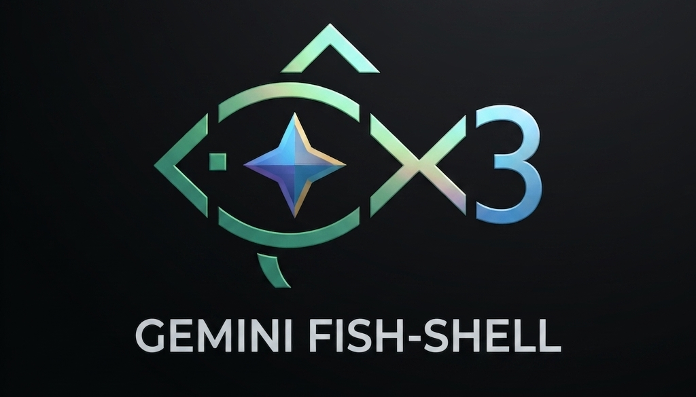
가장 스마트한 규칙 기반(Rule-based) 셸로 평가받는 Fish-shell에 Gemini 2.5 Flash AI 엔진을 직접 이식하여, 자연어 의도를 이해하는 지능형 Co-pilot으로 진화시킨 오픈소스 기여 프로젝트입니다. 기존 셸이 문맥을 이해하지 못하고 에러 발생 후에야 반응하는 한계를 극복하는 것을 목표로 했습니다.
Linux(WSL Ubuntu 22.04) 환경에서 Rust(Frontend) — FFI Bridge — C++(Backend) 3계층 하이브리드 아키텍처를 설계했습니다. Rust는 셸 이벤트 루프 내 키보드 인터럽트 후킹과 ANSI Escape Code 기반 오버레이 UI를 담당하고, C++ 백엔드는 libcurl을 통한 Gemini API 비동기 통신, 동적 프롬프트 생성, JSON 파싱을 전담합니다. FFI Bridge는 두 언어 간 Raw Pointer 기반 메모리 수명 주기(할당 → 사용 → 해제)를 명시적으로 관리하여 메모리 누수를 차단했습니다.
Alt+W(문맥 기반 명령어 자동생성), Alt+Q(복잡한 명령어 즉시 해설), Alt+R(실행 전 위험 선제 진단) 3가지 모드를 설계하고, 최근 명령어 히스토리를 분석해 컨텍스트를 구성한 뒤 모드별 프롬프트를 동적 생성하는 구조를 구현했습니다. 응답 파싱과 오류 복구 흐름까지 포함해 AI API 통합 전 과정을 다뤘으며, 6,000줄 규모의 reader.rs를 분석하여 총 739라인을 추가하고 12번의 코어 커밋으로 기여했습니다.
Arduino · C/C++ · IoT
2023.05 · 팀 프로젝트(4인, 기여도 25%) · 아두이노 코딩·센서 회로 담당
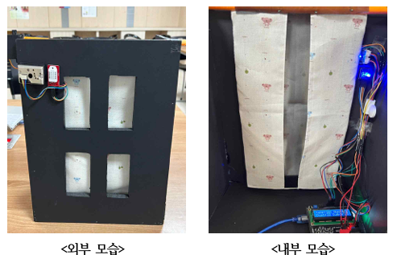
팀 B조 KKOY의 미세먼지 차단 자동 블라인드 프로젝트는 블라인드에 방충망과 필터 천을 결합하고, 미세먼지·온습도 센서로 실시간 데이터를 수집·시각화하여 기준 농도 이상 시 자동으로 블라인드를 제어하는 시스템입니다.
1~2주차에 부품 선정과 모형 제작을 완료했고, 3주차부터 센서·모터 회로 설계 및 아두이노 코딩을 병행했습니다. 서보모터 개조로 360도 회전을 가능하게 하여 최종 주차에 프로토타입을 완성했습니다.
저는 아두이노 코딩과 센서 회로 구성을 담당하여 미세먼지 농도(100㎍/㎥ 기준)에 따른 3색 LED 표시와 서보모터 자동 제어 로직을 구현했습니다. 센서값 실시간 변동으로 모터가 반복 회전하는 문제는 30초 유지 조건을 두어 해결했고, 모터 각도 한계(170°)는 스텝모터·DC모터 대체 실험을 거쳐 서보모터 개조로 360° 회전을 확보했습니다.
Spring Boot · React · Arduino · YOLOv11
2025.08~12 · 메타버스 융합 SW 아카데미 5기 팀 너울(3인) · 백엔드·아두이노·회로 담당
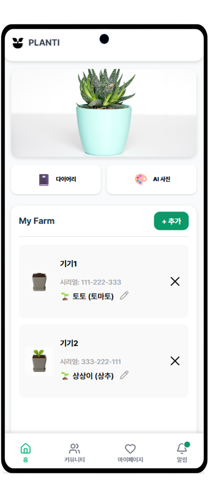
PLANTI는 세종시의 친환경 스마트시티 비전과 AI를 결합해 개인 가정에서 손쉽게 운영하는 토경 기반 스마트팜 시스템입니다. 온습도·토양습도·초음파(수위) 센서로 재배 환경을 수집하고 자동 급수·LED 제어·수위 부족 알림을 제공하며, YOLOv11 기반 AI가 생육 단계와 병해를 판별해 알림과 재배 조언으로 연결합니다.
React 프론트엔드 – Java/Spring Boot 백엔드 – MySQL – Arduino – Flask/YOLOv11 AI 모듈로 구성된 아키텍처를 설계했습니다. 저는 백엔드 전반과 아두이노·회로를 담당하여 기기 등록·센서 로그 적재·LED 제어 API부터 식물 생육 단계 관리, 잎·열매 변화 알림, AI 아트·재배 조언 연동까지 서비스 핵심 도메인을 구현했습니다. User–Device 1:N, Device–Sensor_Log 1:N 구조로 스키마를 설계했으며, 아두이노가 JSON으로 전송한 센서값을 Spring Boot가 수신해 DB에 적재하는 통신 흐름을 직접 구성했습니다.
AI 모델은 초기 3,000장 학습 시 데이터 부족으로 과소적합(mAP50-95 약 0.3)이 나타나, 15,000장으로 5배 증량해 약 0.67까지 개선했습니다. 또한 센서값을 수신 즉시 그대로 저장하는 구조는 데이터 누적에 따라 저장량이 급증하고 조회가 느려진다는 피드백을 받았고, 이 문제의식이 이후 GrowLab에서 SSE 실시간 전송과 1시간 평균 적재, 이상값 Alert 분리 구조로 고도화하는 출발점이 되었습니다.
웹서비스 기능
회로 영상
PHP · Oracle DB · Web Service
2025.10~12 · 팀 프로젝트 · ERD 설계·요구사항 분석·SQL 쿼리 구현 담당
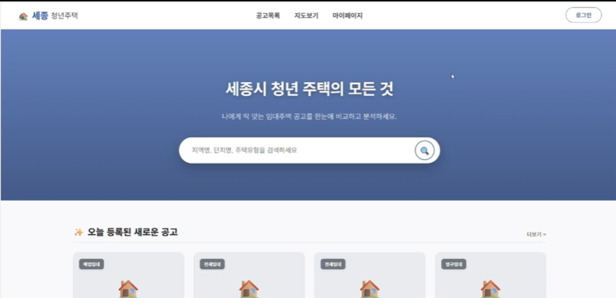
세종시 청년 대상 임대주택 공고 정보가 여러 플랫폼에 분산되어 비교가 어렵다는 문제를 해결하기 위해, PHP와 Oracle DB를 활용한 공고 통합 조회·비교 웹 서비스를 팀 프로젝트로 개발했습니다.
USER_TABLE, USERPROFILE, HOUSINGPOST, HOUSEDETAIL, ELIGIBILITYCRITERIA 등 7개 테이블을 설계하고, ON DELETE CASCADE 및 트랜잭션(OCI_NO_AUTO_COMMIT / oci_commit)을 적용하여 데이터 무결성과 원자성을 보장했습니다. 공고 등록 시 RETURNING 절로 자동 생성된 PK를 즉시 하위 테이블 INSERT에 연결하는 방식도 직접 구현했습니다.
저는 DB 모델링·테이블 설계 및 홈페이지 구현 전반에 참여했으며, 유형·지역·기간·진행상태를 조합하는 동적 WHERE 절 필터링, 다중 JOIN 기반 공고 목록·마이페이지·관심공고 조회 쿼리, CEIL(FINISH_DATE - SYSDATE) D-Day 계산 등 핵심 쿼리를 작성했습니다. PHP·Oracle 환경을 PuTTY(SSH)로 학과 서버에 접속해 직접 배포·운영하며 실제 서비스 환경에서의 DB 연동을 경험했습니다.
AIoT · Edge AI · Cloud Backend
2026.01~06 · 팀 프로젝트 · 백엔드·하드웨어 설계 및 통신 담당
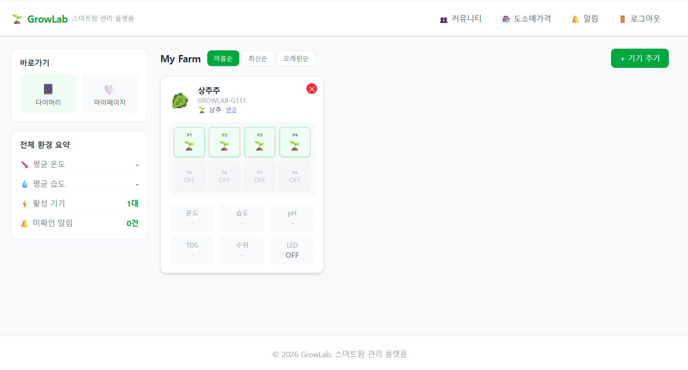
GrowLab은 AI와 IoT를 결합한 스마트 수경재배 플랫폼으로, 센서·카메라로 수집한 생육 데이터를 실시간 모니터링하고 생장 단계와 수확 시점을 예측합니다. 누구나 작물의 상태를 한눈에 확인하고 최적 환경을 자동으로 유지할 수 있도록 설계했습니다.
엣지 단에서는 ESP32-CAM 영상을 YOLOv11로 처리해 생육·질병을 판별하고, 서버 단의 LightGBM으로 72시간 뒤 생장 단계를, DeepHit 생존분석으로 수확 예상 시점을 예측합니다. Arduino UNO·Raspberry Pi 5가 4종 센서와 모터·LED를 제어하고, 수집 데이터는 Spring Boot·Flask 백엔드를 통해 AWS환경에서 처리되며 React 대시보드로 시각화됩니다.
저는 백엔드 개발과 하드웨어 설계 및 통신을 담당했습니다. MQTT를 통한 서버->기기 통신을 구축하고, SSE 기반 실시간 스트리밍과 알림 구조를 구축했습니다. 이 과정에서 제약 조건을 데이터 계층에서 보장하는 설계의 가치와, 로그 분석을 통해 장애 원인을 정확히 규명하는 디버깅 규율을 체득했습니다.
웹서비스 기능
기기 영상